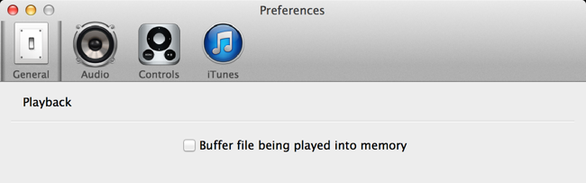

When checked on the "Buffer file being played into memory" will buffer the contents of the current file being played into memory. This can be useful for two reasons: Firstly, it stops the continuous hard drive clicking during playback as the data is loaded as needed.
Secondly, music played across a network can be prone to network congestion, particularly for large HD quality tracks, causing gaps in playback. So by buffering the track into memory the data is pulled across the network and is buffered locally in memory available for playback.
